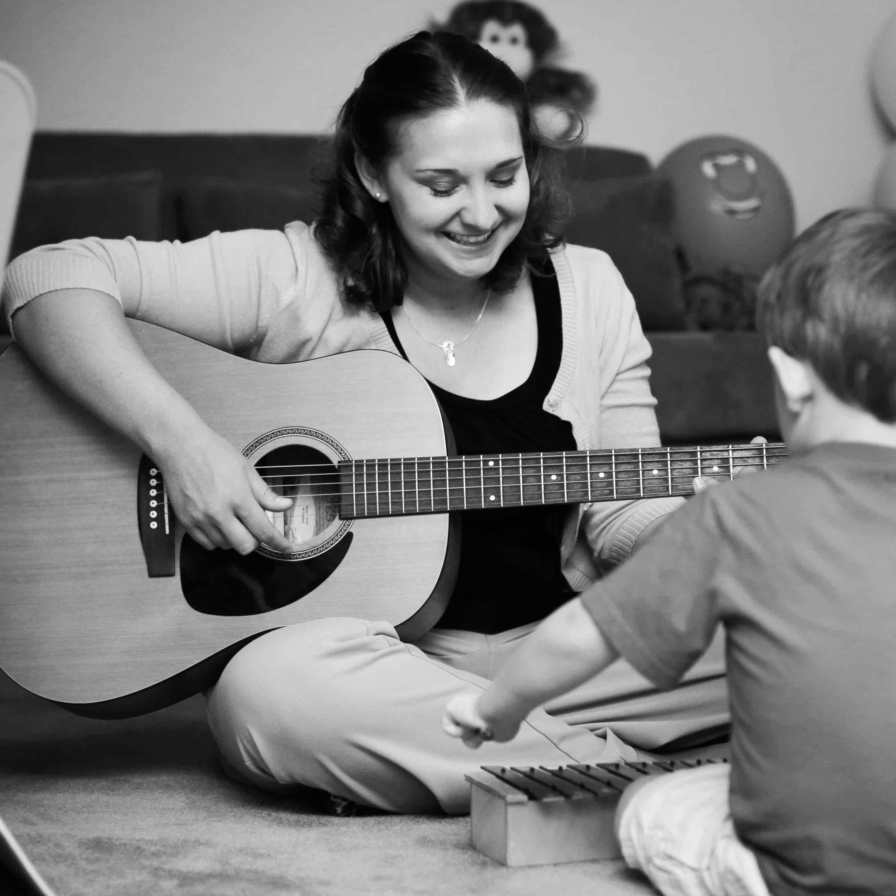

<div id="therapy-container" class="container-fluid">
	<div class="row-center-on-less-xl row">
		<div class="col-2 d-none d-xl-block"> 
			
		</div>
		<div class="col therapy-text-content"> 
			<div class="d-xl-none d-flex justify-content-center w-100">
				
			</div>
			{% include expandButton.html button-text="What is Music Therapy?" link='what-therapy' shown='true' %}
			<div class="collapse" id="what-therapy">
			<p>Music therapy is an evidence-based and goal-directed process that uses musical
			interventions to address non-musical needs and improve functioning in areas such as
			cognition, attention, communication, motor skills, social skills, and improve mental and
			emotional health. Assessments are completed to determine a patient’s needs and
			challenges, in addition to identifying a patient&#39;s strengths and preferences. Specific
			musical interventions are developed and implemented by a credentialed therapist to
			achieve those non-musical goals in order to strengthen functional abilities and increase
			quality of life.
			{% include expandButton.html link='what-therapy' text='Less' %}
			</p></div>

			{% include expandButton.html button-text="Why is Music Therapy Effective?" link='why-therapy' shown='true' %}
			<div class="collapse" id="why-therapy">
			<p>
			Music therapy offers a unique approach to treatment as music stimulates all areas of the
			brain simultaneously, and is in fact the only sensory experience to do so. Music not only
			activates the brain, but can also facilitate the development of new neural strategies and
			change neural impulse patterning. Music&#39;s effect on the brain helps to prompt
			engagement and higher attention to task, provides important cues for cognitive
			exercises and memory recall, and also helps to regulate movement and motor function.
			The emotional effect of music draws people in and enables therapists to truly connect
			with clients and reach them on a personal level, making it an ideal approach. Music-
			based interventions are easily adaptable and since they are driven by personal
			preference, they feel less clinical, are very enjoyable, and subsequently can be highly
			motivational. Additionally, as research continues to be done on the many applications of
			music therapy, it continues to support the use of music to treat non-musical challenges.
			{% include expandButton.html link='why-therapy' text='Less' %}</p>
			</div>

			{% include expandButton.html button-text="What Goals are Addressed in Music Therapy Sessions?" link='therapy-goals' shown='true' %}
			<div class="collapse" id="therapy-goals">
			<p>Music therapy is used to achieve a wide range of goal areas, which vary based on client
			need and desired functional outcomes, in addition to varying with age and diagnosis.
			Goal areas and specific objectives are established on an individualized basis and are
			based on a functional assessment of a client&#39;s needs, abilities, and preferences.
			Goal areas include expressive and receptive communication skills, verbal and non-
			verbal communication skills, social skills, cognition, memory, attention and joint
			attention skills, academic and pre-academic skills, fine and gross motor skills, self-
			expression, emotional expression and understanding, emotional and spiritual support,
			and overall well-being.
			{% include expandButton.html link='therapy-goals' text='Less' %}
			</p></div>

			{% include expandButton.html button-text="How Does Treatment Work?" link='therapy-works' shown='true' %}
			<div class="collapse" id="therapy-works">
			<p>Music therapy, much like any other therapy, starts with an assessment to best
			understand where a client is at in the current moment and where he or she wants or
			needs to be in order live life more fully. After the initial assessment is completed, a
			formal treatment plan with long term goals and short-term objectives is adopted.
			Session progress is documented after each session and treatment plans are updated
			every 3-6 months. Individualized music-based interventions are used throughout each
			session to both best meet the client’s needs in the moment and to improve functional
			skills and the quality of everyday life on an on-going basis.
			{% include expandButton.html link='therapy-works' text='Less' %}
			</p></div>

			{% include expandButton.html button-text="Who is Qualified to Provide Music Therapy Services?" link='qualified' shown='true' %}
			<div class="collapse" id="qualified">
			<p>Individuals with the nationally-recognized credential, MT-BC (music therapist, board-
			certified), are qualified to provide music therapy services. In order to become
			credentialed, music therapists complete an approved four-year degree program followed
			by a six to nine month internship, and then must pass the board examination. Music
			therapists must be re-certified every five years. To learn more or to verify a music
			therapist’s credentials go to <a href="http://www.cbmt.org">http://www.cbmt.org</a>.
			{% include expandButton.html link='qualified' text='Less' %}
			</p></div>

			{% include expandButton.html button-text="Does Insurance Cover Music Therapy Services?" link='insurance' shown='true' %}
			<div class="collapse" id="insurance">
			<p>Some insurance policies may cover music therapy services, which are billed using
			standardized CPT® (Current Procedural Terminology) codes. However, every insurance
			company and every policy is different.
			Here at North Austin Music Therapy we do not bill insurance directly, but will provide
			the needed paperwork to enable clients to seek insurance reimbursement on their own.
			Please contact Meredith Hamons for more information.
			{% include expandButton.html link='insurance' text='Less' %}
			</p></div>

			{% include expandButton.html button-text="How Do I Know if Music Therapy is the Right Choice? " link='choice' shown='true' %}
			<div class="collapse" id="choice">
			<p>North Austin Music Therapy offers a free initial screening session to help you determine
			if pursuing music therapy services is the right choice. Initial screenings are a chance to
			meet with a therapist to discuss goals and current challenges and also to give your loved
			one a chance to enjoy engaging in music with one of our therapists, before a formal
			assessment is started. Initial screenings are a great way to see first-hand the benefits of
			music therapy and to determine if it is the right fit for you and/or your loved one. You
			can contact North Austin Music Therapy anytime to schedule a free screening
			appointment.
			{% include expandButton.html link='choice' text='Less' %}
			</p></div>

			{% include expandButton.html button-text="Where Can I Find Out More About Music Therapy?" link='find-more' shown='true' %}
			<div class="collapse" id="find-more">
			<p>Feel free to contact North Austin Music Therapy directly for more information about the
			benefits of music therapy and how it specifically could support you and/or your loved
			one. You can also check out the American Music Therapy Association for additional
			information and resources related to the field and practice of music therapy.
			{% include expandButton.html link='find-more' text='Less' %}
			</p></div>
		</div>
	</div>
</div>
